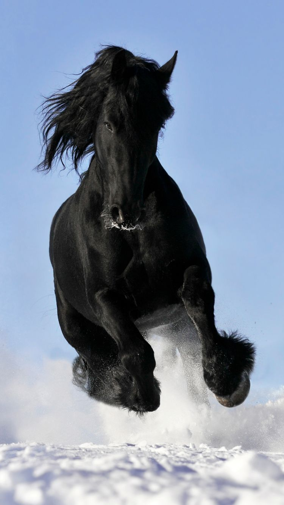

dog
he dog (Canis familiaris[4][5] or Canis lupus familiaris[5]) is a domesticated descendant of the wolf. Also called the domestic dog, it is derived from extinct Pleistocene wolves,[6][7] and the

cat
The cat (Felis catus) is a domestic species of small carnivorous mammal.[1][2] It is the only domesticated species in the family Felidae and is cers of the family.[4]

lion
The lion (Panthera leo) is a large cat of the genus Panthera native to Africa and India. It has a muscular, broad-chested body; short, rounded head; round ears; and a hairy tuft at the end of its tail

horse
The horse (Equus ferus caballus)[2][3] is a domesticated, one-toed, hoofed mammal. It belongs to the taxonomic family Equidae and is one of two extant subspecies of Equus ferus.
